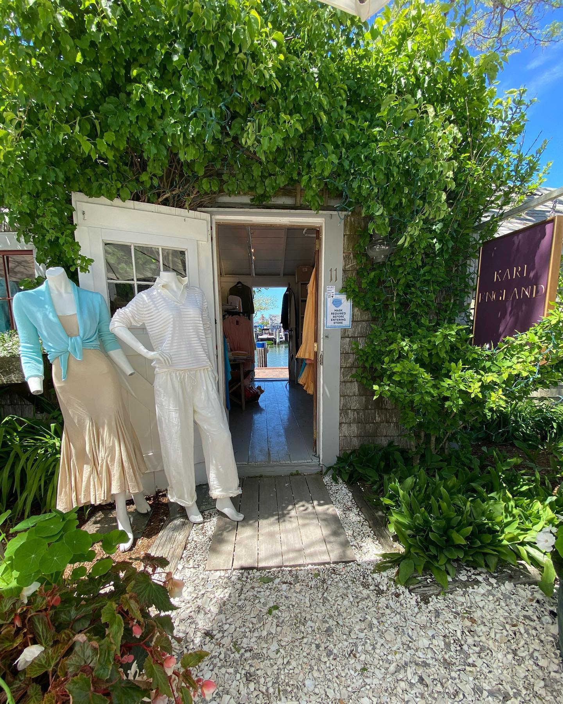
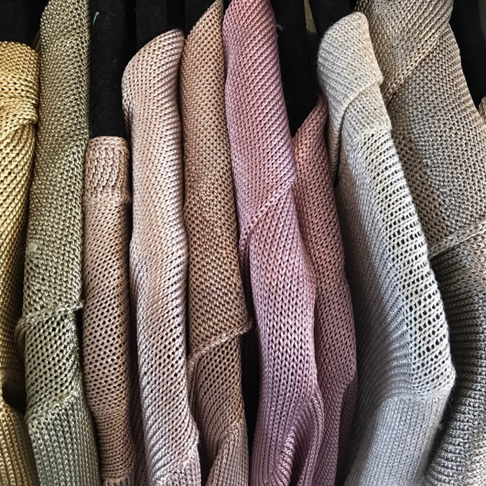

Made by hand in America,
worn on Nantucket.
Bias-cut linen, washed silk and hand-loomed knits from a shingled shop at the end of Old South Wharf. Since 1976.
Less a store than a standing invitation.
Kari England is a shingled shack at the end of Old South Wharf, hung floor to ceiling with color: linen on the porch rail, silk in the doorway, the harbor three steps behind it. Her family has dressed this island since 1976; Kari and her mother Nancy opened this one in 2007.
You won't find a cart on this site. Every piece is dyed by hand in small batches, so buying one starts the old way, with a conversation. You write, she answers, the clothes follow.
MESSAGE HER →What we made this season
Everything hand-dyed, everything cut to move. Less a catalog, more here's how it drapes.

The Linen Shirtdress
Washed linen dyed in small batches, in every shade the harbor sky can make. Wear it open over a swimsuit, belted at dinner, or buttoned wrong on purpose. It only gets better as it wrinkles.

Washed Silk
Bias-cut silk that pours instead of hangs. Slips, camis and wraps in colors Kari mixes herself, including a green that shouldn't work, and does.

Knit Eveningwear
Hand-loomed gowns for long dinners and longer sunsets. Knit to hold you, to move half a beat after you do, and to outlast every trend on this island.
No cart. A conversation.
High summer or dead of winter, buying a piece works the way it has since 1976.
DM Kari the piece that caught your eye, your measurements, and the occasion. Questions welcome; she answers everything herself.
Your piece is dyed, cut and finished by hand by the small workshops she's trusted for decades.
It arrives, it moves, it lasts. Bring it back to the wharf any summer if it ever needs a new hem.

“I love to decorate humans, and I love to make humans happy, because it makes me feel like I'm doing the right thing.”
Kari England grew up in the family clothing business, Peter England, which her parents, Peter and Nancy England, founded on Nantucket in 1976 after years of spending summers on the island. The store became known for luxurious clothing from designers such as Jeffrey Bean, Putumayo, Go Silk, Calvin Klein, Ralph Lauren, and many more.
In 2000, Kari branched out from the family business to create her own identity, while Peter England continued nearby under the ownership of her brother Peter and his wife. In 2007, Nancy invited Kari to join her in opening a small shop on Old South Wharf, where Kari began designing, learning from her mother, and working with yarns sourced from Spain, Italy, and France.
Today, Kari England and Peter England remain distinct but connected, sometimes sharing yarns and designs. Kari's shop has its own relaxed Nantucket style, featuring linen and silk garments, hand-loomed sweaters now made in Los Angeles, and a signature eucalyptus yarn blend that has been central to the collection since 2007. Set on the wharf among yachts and sailboats, the shop offers a welcoming dockside atmosphere with backgammon, refreshments, and ever-changing designs that reflect Kari's creative spirit.
“A human being to me is like a cake, with many depths, with many layers.” She dresses all of them.
11 Old South Wharf
OPEN DAILY IN SEASON · 10–6
OFF-SEASON · BY DM
If the door's open, come in and say hello. If it isn't, Kari's probably out on the boat. Send a DM instead, or email if you'd rather.